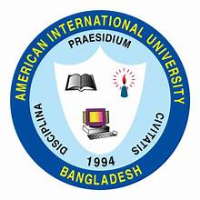
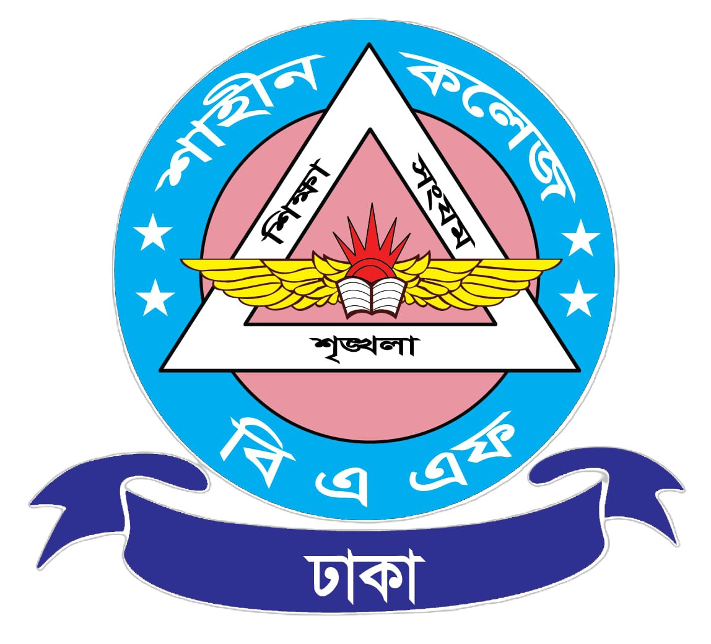

Home |
Projects |
Experience |
Contact Me
Education

American International University-Bangladesh (AIUB)
Degree: Bachelor of Science in Computer Science and Engineering
Study Period: 2023 – Ongoing
CGPA: 3.68
Academic Details
- Studied core programming fundamentals including C and C++.
- Learned object-oriented programming concepts and applied them in lab projects.
- Worked on data structures and algorithm basics during coursework.
- Completed introductory web development using HTML.
- Participated in regular programming lab exercises and assignments.

BAF Shaheen College Dhaka
Degree: Higher Secondary Certificate (HSC) – Science
Study Period: 2020 – 2022
GPA: 5.00
Academic Details
- Completed higher secondary education in Science group.
- Studied Physics, Chemistry, Mathematics, and Biology.
- Achieved strong academic performance throughout the course.
- Participated in classroom and laboratory-based science activities.
Cambrian School and College
Degree: Secondary School Certificate (SSC) – Science
Study Period: 2018 – 2020
GPA: 5.00
Academic Details
- Completed secondary education in Science group.
- Was a member of Cambrian Debating Society (CDS).
- Participated in scouting activities and team programs.
- Built strong foundation in Mathematics and Science subjects.